← 返回阅读库 · 原论文目录
论文讲解阅读文档 · 新模型 · v061
Is Space-Time Attention All You Need for Video Understanding[2102.05095]
视频时长 00:04:33；讲解文字 2,410 字符；提取讲解画面 16 张。按视频原顺序阅读，每段文字保留时间戳。
文字来自整段视频的自动语音转写，按自然停顿分段，并与 PPT / 论文页面 / 演示画面对齐。未将讲解压缩为摘要；术语、数字和口述公式请结合画面及原论文核对。 阅读稿已校正规范部分明确术语误识别；原始逐字稿和每处修改记录另行保留。
讲解画面为源视频截图（640×360），不是可编辑 PPT 文件。全片按每秒 2 帧扫描内容变化，逐步展开页保留；连续动画保留代表画面。清晰度受源视频限制。
下载完整资料包 · 含离线 HTML、PDF、Word、全部 PPT 画面和字幕。
原论文与材料
Is Space-Time Attention All You Need for Video Understanding? · 下载完整 PDF（13 页）
按时间阅读
00:00:00–00:00:28 · 画面 001
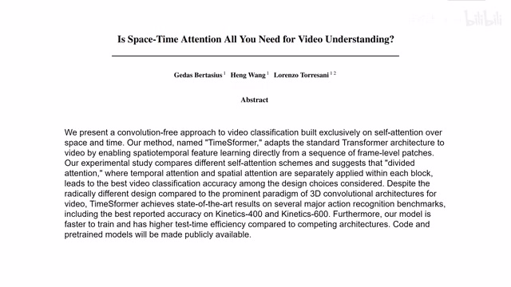
00:00:00–00:00:28 · 画面 001大家好,今天我们来介绍 Is space-time attention all you need for video understanding?这篇论文，你从题目上一看就知道它是 transformer，而且是做 video 的 transformer。这方面相关的工作我们之前介绍了 multi-scale transformer 那篇文章，比这篇文章晚了两个月，性能和计算代价都比这篇文章要好。所以说如果你赶时间，你就可以直接右上角了。他们这篇文章提出的方法叫 timesformer，我们去来看作者研究了什么样的问题吧。
00:00:28–00:00:59 · 画面 002
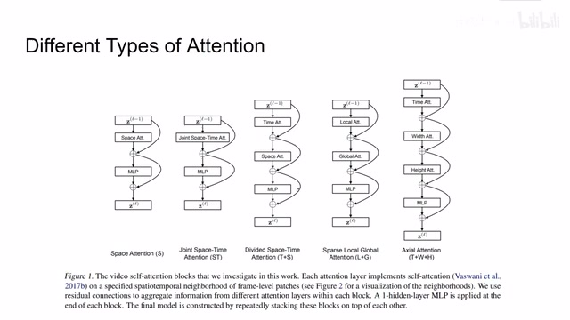
00:00:28–00:00:59 · 画面 002那么本文关注的核心呢，就是我们如何把 Vision Transformer 移植到视频上。我们看到这边呢，是我们传统的一个 Vision Transformer，也就是单独每一帧它的空间尺度上呢，它做了这个 self attention。那么你自然而然的就想到，我如果把很多帧一块送进来，让他们相互的不仅在空间时刻上做，而且在时间时刻上做，那么这样子是不是我们就直接得到了一个能做 video 的 vision transformer 呢？当然了，这个想法是很美好的，这个美好的想法叫做 joint space time attention，就是这种配置。但是这个美好的想法是要付出代价的。
00:00:59–00:01:00 · 画面 003
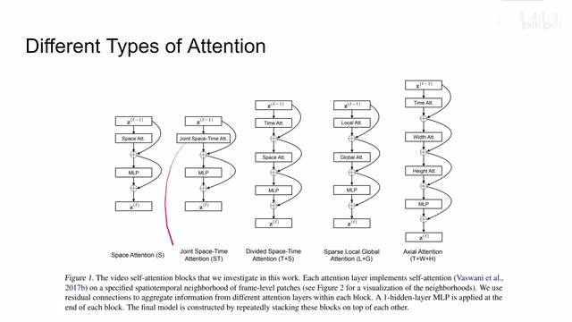
00:00:59–00:01:00 · 画面 00300:01:00–00:02:05 · 画面 004
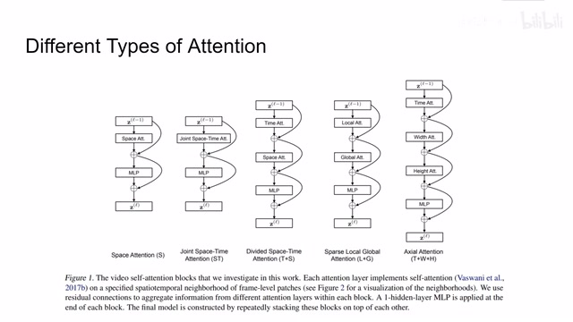
00:01:00–00:02:05 · 画面 004因为很自然的你想到，Transformer 的计算代价随着你的 sequence 输入的 patch 数量逐渐增加，那么它的计算代价是从一个植株位的增加的。所以你这视频稍微长一点，像素稍微高一点，你这个 joint space time 的 attention 就会很容易的把我们内存爆掉。那么为了解决这个问题，作者说 ok ok，你拿咱们不要全局都做 attention，而且你说你视频的第一帧和最后一帧做 attention 似乎也没有说太大的必要。
那么这里呢，作者就提出了三种 attention 的构型。看到第一种呢，是这个 divided space time。他的思想呢，其实跟 mobile net 的 convolution 是很像的。就是我原来是一个 joint。我原来是一个 joint 的 attention对于 mobile net 是一个 generalized一个一般的这种 convolution他在这个 spatial wise 和这个 channel wise他都会做这个 convolution那现在呢，我把这个 spatial 和这个 temporal 给他拆开。
我先做时间 temporal domain 上的这个 attention。那么得到一些那些法导的 token。然后呢，我们再做这个 spatial domain。然后呢，得到一些那些法导的 token。
00:02:05–00:02:11 · 画面 005
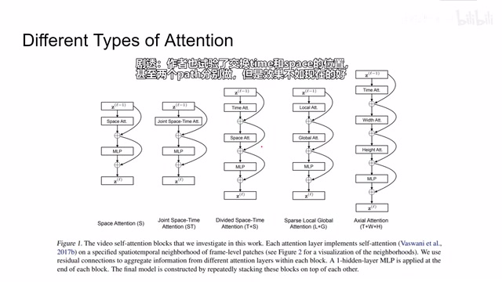
00:02:05–00:02:11 · 画面 005最后呢再给我 mlp这个呢就是 divided space time 的 attention那么此外呢，作者还实验了这两种 attention。
00:02:11–00:02:15 · 画面 006
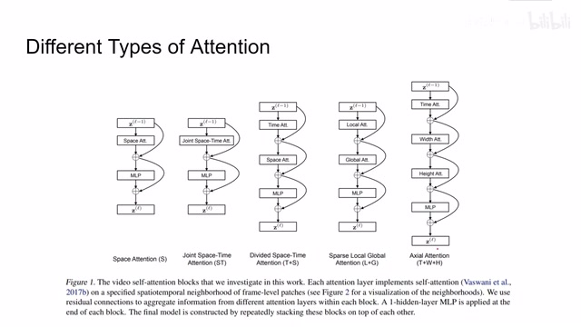
00:02:11–00:02:15 · 画面 006这个呢，我们看图来解释。
00:02:15–00:03:24 · 画面 007
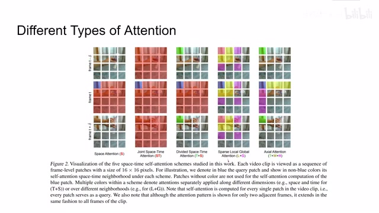
00:02:15–00:03:24 · 画面 007首先是这个 sparse local global那么他的意思呢就是。一开始呢，我先对一个 patch 他周围。比如说图像尺寸四分之一的。这么一组 patch 呢做 selfattention这块做一下，这块做一下。这块做一下，这块做一下。这个是不是就像想起了我们的这个 Swin Transformer。然后呢，我们再做 global 的 attention。
那相当于就是只做这四个粉色的角的。他们之间的 attention而且粉色的 patch 呢是要横跨整个时间轴的。也就是每一帧里面粉色的 patch 呢。他们相互做 attention对吧，这个 Swin Transformer 的即时感更强了一点。那么这边这个呢，是 axial 的 attention。你可以看到我们每个 patch。
至于他所在的三个轴方向上的 patch。做 attention三个轴包括呢，一个是时间轴，你看到这个蓝色的跟这个绿色的这些，他们在同一个位置上的 patch，他们是不同时刻的，在同一个位置的图像这个轴呢做 attention。同时呢，它的横轴和纵轴就是空间尺度上的横轴和纵轴也做 attention，就这些方块加起来做一次 attention。那么这个呢，就是这个 axial attention。那么以上呢，就是做着实验了，我们做 videoattention 的类型。那么我们看到结果。
00:03:24–00:03:36 · 画面 008
00:03:24–00:03:36 · 画面 008那这里呢我们最先注意到是这个 divided space time 它做 attention 的效果呢是最好的像这里呢汇报了 Kinetics-400 那训练时间还有推理速度呢比 SlowFast 要短而且呢效果比较好从这边你可以看到相对于这种我们所有的 patch 一起来做这个 attention 那么把 spatial 和 temporal domain 的这个 attention 分开做呢能够有效的帮我们解决参数量还有内存当然你可以使用不同的 backbone 不同大小的 transformer
00:03:36–00:03:39 · 画面 009
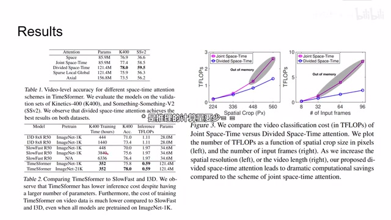
00:03:36–00:03:39 · 画面 00900:03:39–00:03:50 · 画面 010
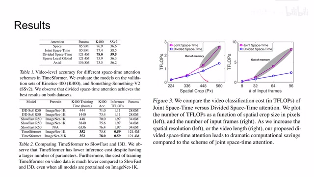
00:03:39–00:03:50 · 画面 01000:03:50–00:03:53 · 画面 011
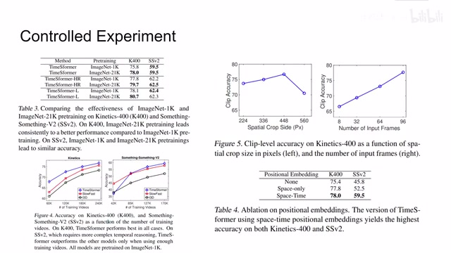
00:03:50–00:03:53 · 画面 01100:03:53–00:03:54 · 画面 012
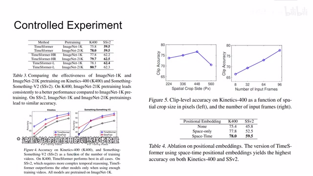
00:03:53–00:03:54 · 画面 012因为像每个 patch 的大小还有每个视频体多少帧等等包括我们的 positional embedding 这些实验结果呢都比较符合我们的直觉这里呢你可以看到作者研究了 pre-training 的重要性那么对于 Kinetics-400 来说呢你使用更强的 pre-training 能够得到更好的效果但是在 something something 上呢似乎呢就没有那么明显这是一个很有趣的发现不过这一层操作下来呢它的性能呢还是不如这个 multi-scale transformer
00:03:54–00:04:00 · 画面 013
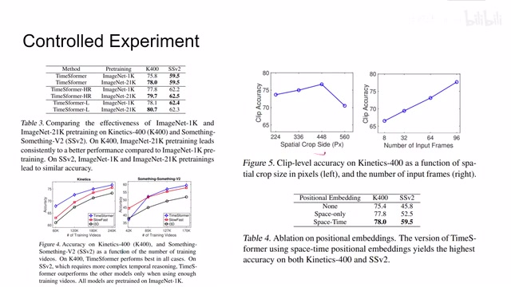
00:03:54–00:04:00 · 画面 01300:04:00–00:04:01 · 画面 014
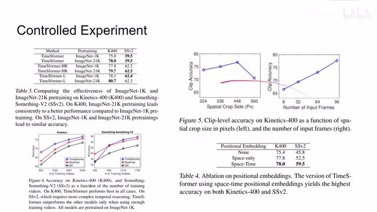
00:04:00–00:04:01 · 画面 01400:04:01–00:04:33 · 画面 015
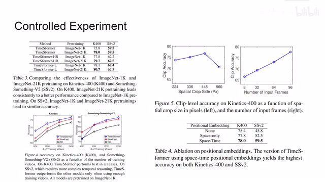
00:04:01–00:04:33 · 画面 015好的那么以上就是我对这篇论文的简单的分析作者也汇报了相当丰富的实验就是一个实验报告的形式在这个论文的原文中感兴趣的非常推荐你去查看那么感谢您的收看再见
00:04:33–00:04:33 · 画面 016
00:04:33–00:04:33 · 画面 016转写与来源说明 · 1 个自动复核提示
保留 46 个原始语音片段，1 个片段触发自动复核提示。提示仅用于定位可能的术语、重复或识别问题，不等于已确认错误。
讲解画面为源视频截图（640×360），不是可编辑 PPT 文件。全片按每秒 2 帧扫描内容变化，逐步展开页保留；连续动画保留代表画面。清晰度受源视频限制。
原视频：paper/合集_2026-10-16_新模型/[论文简析]Is Space-Time Attention All You Need for Video Understanding[2102.05095].mp4
SHA-256：9a841bf66268a051a92eee1a712e8c228b810ac556e988392992acc2113d50ee
那么这边这个呢，是 axial 的 attention。
全文按视频语音与画面制作。原论文可从上方链接下载；完整资料包保留全文、原始逐字稿、字幕和校对记录。